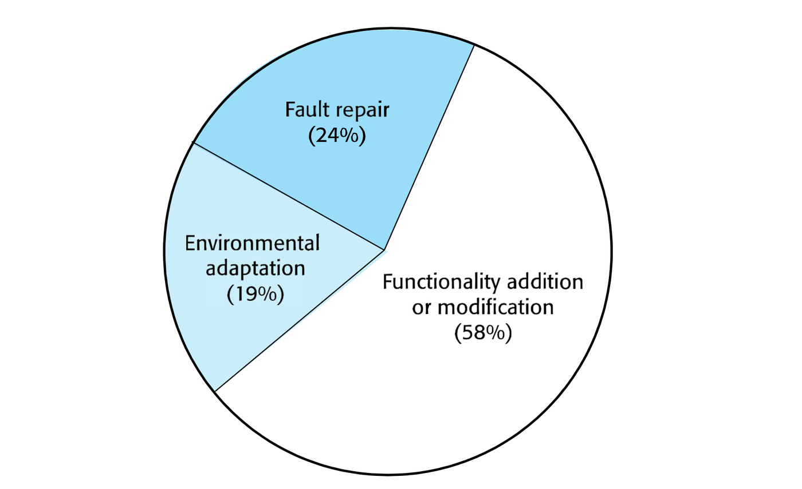

A common misconception in software engineering is that the development cycle ends once software is successfully deployed to production. In reality, delivery marks the beginning of the longest and most expensive phase of the software lifecycle: Software Maintenance.
Empirical studies show that 65% to 85% of total lifecycle cost is spent during post-delivery maintenance, while original development accounts for only 15% to 35%. Software systems are continuously exposed to changing operating environments, evolving business requirements, hardware upgrades, and uncovered defects. If software cannot evolve, it rapidly degrades into obsolescence.
1. Definition and Categories of Maintenance
The IEEE Standard 610 (1990) formally defines software maintenance as:
Software Maintenance: The process of modifying a software system or component after delivery to correct faults, improve performance or other attributes, or adapt the system to a changed environment.
Maintenance activities fall into four distinct categories:
| Category | Primary Driver | Core Purpose | Typical Example | Approximate Effort Share |
|---|---|---|---|---|
| Corrective Maintenance | Reactive (Defect-driven) | Fixing software bugs, logic flaws, crashes, and security vulnerabilities discovered in production. | Patching an SQL injection vulnerability or fixing an off-by-one boundary calculation. | 17% – 21% |
| Adaptive Maintenance | Reactive (Environment-driven) | Modifying software to operate correctly in a changed technical or business environment without changing system functionality. | Migrating to a newer operating system, upgrading database drivers, or complying with updated data privacy laws. | 18% – 25% |
| Perfective Maintenance | Proactive (User/Value-driven) | Implementing new user requirements, enhancing existing features, and improving performance or UI responsiveness. | Adding two-factor authentication, implementing a new export format, or optimizing a slow search query. | 50% – 65% |
| Preventive Maintenance | Proactive (Quality-driven) | Modifying internal code structures to improve maintainability, reduce complexity, and prevent future faults without altering external behavior. | Refactoring monolithic classes, eliminating duplicate code, and improving test harness coverage. | 4% – 5% |

[!IMPORTANT] Perfective Maintenance Dominates: Contrary to popular belief, fixing bugs (corrective maintenance) is not where most maintenance effort is spent. Perfective maintenance accounts for over half of all maintenance effort, because successful software inevitably generates demand for new capabilities and enhanced features.
2. Software Evolution and Lehman’s Laws
Unlike physical machines, software does not physically wear out, rust, or degrade from mechanical friction. Instead, software undergoes software decay (software entropy): repeated patches, rushed deadlines, and structural compromises gradually degrade code organization until modifications become prohibitively expensive and error-prone.
M. M. Lehman formulated several fundamental laws governing software evolution:
- Law of Continuing Change: An E-type (real-world) software system must continually adapt to its changing environment, or it becomes progressively less satisfactory to users.
- Law of Increasing Complexity: As a software system evolves, its internal complexity increases unless specific, deliberate work (preventive maintenance/refactoring) is undertaken to simplify and maintain its structure.
- Law of Continuing Growth: The functional capability of software must continually expand over its lifetime to satisfy user expectations and retain commercial viability.
Technical Debt
Technical debt represents the implied future cost of rework caused by choosing a quick, expedient solution now instead of a clean, well-engineered architectural design.
- Like financial debt, technical debt accrues interest: every subsequent feature takes longer to build and introduces more side-effect bugs because developers must navigate convoluted legacy code.
- If left unmanaged, the interest on technical debt overwhelms the development team, forcing them to spend 100% of their time on bug fixes rather than shipping new features.
3. Code Smells and Refactoring
Refactoring is the disciplined technique of restructuring an existing body of code, altering its internal structure without changing its external observable behavior. Its primary purpose is to reverse software entropy, eliminate technical debt, and improve readability and maintainability.
Martin Fowler coined the term “Code Smells” to describe surface-level structural weaknesses in source code that indicate deeper design problems:
| Code Smell | Description & Symptoms | High-Yield Refactoring Technique |
|---|---|---|
| Duplicate Code | The exact same or highly similar code structure appears in multiple methods or classes. Increases maintenance overhead because bug fixes must be duplicated. | Extract Method (isolate common code in a reusable function) or Pull Up Method (move shared code to a superclass). |
| Long Method | A method containing excessive lines of code that attempts to handle multiple distinct responsibilities. Hard to understand, test, and reuse. | Extract Method (decompose into smaller, single-purpose helper functions) or Decompose Conditional. |
| Large Class (God Class) | A class with too many fields, methods, and responsibilities, violating the Single Responsibility Principle (SRP). | Extract Class (group cohesive subsets of fields/methods into new specialized classes). |
| Long Parameter List | A method requiring 4+ parameters. Difficult to call correctly and highly prone to parameter ordering mistakes. | Introduce Parameter Object (encapsulate related arguments into a dedicated object) or Preserve Whole Object. |
| Divergent Change | One class is commonly modified in different ways for different unrelated reasons (e.g. changing DB schema and changing UI format both edit the same class). | Extract Class (separate the distinct concerns into decoupled classes). |
| Shotgun Surgery | A single conceptual modification requires making many small tweaks across dozens of different classes. | Move Method / Move Field (bring related logic together into a single cohesive class). |
| Feature Envy | A method in Class A accesses the getters and internal fields of Class B more than its own data. | Move Method (move the logic into the class whose data it manipulates). |
| Switch Statements / Complex If-Else | Repeated conditional branching checking type codes. Adding a new type requires modifying every single switch block in the codebase. | Replace Conditional with Polymorphism (apply Strategy Pattern, State Pattern, or class inheritance). |
4. The Refactoring Protocol
Refactoring must be executed methodically to prevent accidental functional regressions:
┌────────────────────────────────┐
│ Ensure Comprehensive Automated │
│ Regression Tests Pass (Green) │
└───────────────┬────────────────┘
▼
┌────────────────────────────────┐
│ Apply ONE Small, Atomic │
│ Refactoring Transformation │
└───────────────┬────────────────┘
▼
┌────────────────────────────────┐
│ Re-run Automated Test Suite │
│ (Verify All Tests Still Pass) │
└───────────────┬────────────────┘
▼
┌────────────────────────────────┐
│ Commit Atomic Refactoring Step │
└────────────────────────────────┘Refactoring vs. Other Code Modifications
| Modification Type | Changes Internal Structure? | Changes External Observable Behavior? | Primary Objective |
|---|---|---|---|
| Refactoring | Yes | No | Improve maintainability, readability, and reduce technical debt. |
| Feature Addition | May change | Yes (Adds new behavior) | Deliver new functional capability to users. |
| Bug Fixing (Corrective) | Usually minor | Yes (Changes incorrect behavior to correct) | Eliminate defects and faults. |
| Performance Optimization | Yes | No (Functionally identical, faster execution) | Maximize throughput or minimize latency/memory. |
[!WARNING] Never Refactor Without Automated Tests: Refactoring without a comprehensive automated test suite (unit and integration tests) is reckless code churn. Tests act as the safety net guaranteeing that internal structural changes have not altered external functionality.